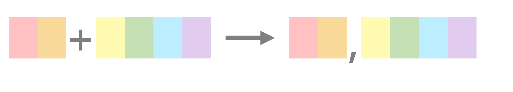
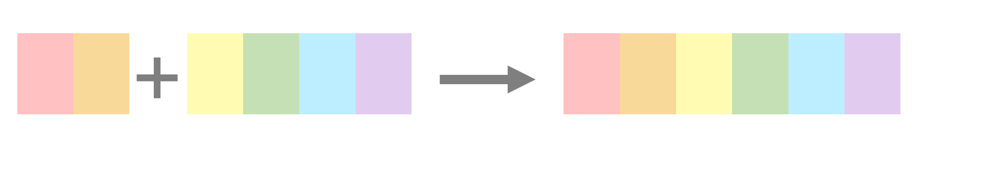
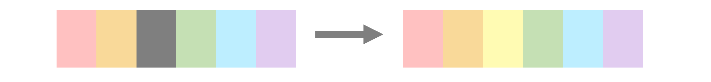
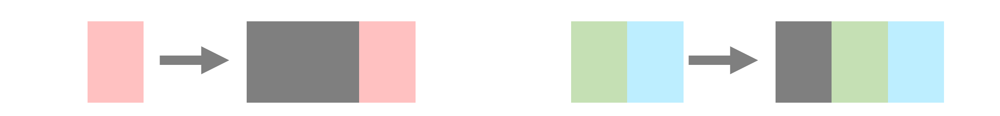

Chapter 1 R 語言基礎語法
本章節系統性介紹 R 語言的重要語法和dplyr套件的功能及用法，請務必熟悉各函式，以便後續程式碼撰寫。
1.1 物件（Object）
物件是 R 語言中構成資料的基本要素，常見者包含五大類：
- 向量（vector）
- 因子（factor）
- 矩陣（matrix）
- 資料框（data frame）
- 陣列（list）
物件的圖示如圖1.1。
圖 1.1: R 物件示意圖
以下小節針對各基本要素的構建與運算詳細說明。
1.1.1 向量（Vector）
⌾ 向量的性質
- 一組值
- 一維
- 資料型態可為：數值、文字、邏輯值
⌾ 建立向量
建立向量可利用c()函式建構。
數值向量
## [1] 1 2 3 4 5文字向量
## [1] "A" "B" "C" "D" "E"邏輯向量
## [1] TRUE FALSE TRUE FALSE TRUE⌾ 擷取向量中特定元素
擷取單一元素
## [1] "C"擷取多個連續元素
## [1] "B" "C" "D"擷取多個非連續元素
## [1] "A" "C" "E"以邏輯值擷取元素
請注意輸入的邏輯值向量長度必須與原向量相同！
## [1] "A" "B" "E"⌾ 連續數值資料
利用seq()函式建立連續數值，程式碼撰寫如下：
## [1] 2 4 6 8 10 12 14 16 18 20⌾ 向量運算
統計運算
以下建立一個向量vec4作為範例，所有運算的程式碼與結果請參照表1.1。
| 運算 | 程式碼 | 輸出結果 |
|---|---|---|
| 最大值 |
max(vec4)
|
15
|
| 最小值 |
min(vec4)
|
2
|
| 最大值索引 |
which.max(vec4)
|
4
|
| 最小值索引 |
which.min(vec4)
|
6
|
| 全域 |
range(vec4)
|
2 15
|
| 總和 |
sum(vec4)
|
60
|
| 平均 |
mean(vec4)
|
7.5
|
| 中位數 |
median(vec4)
|
7
|
| 乘積 |
prod(vec4)
|
2332800
|
| 變異數 |
var(vec4)
|
19.714
|
| 標準差 |
sd(vec4)
|
4.44
|
數學運算
以下利用vec4與新建向量vec5作為範例，所有運算的程式碼與結果請參照表1.2。。
| 運算 | 程式碼 | 輸出結果 |
|---|---|---|
| 絕對值 |
abs(vec5)
|
0.57 4.28 1.23 6.58 4.67 2.09
|
| 根號 |
sqrt(vec4)
|
2.236 3 1.732 3.873 2.449 1.414 2.828 3.464
|
| 四捨五入 |
round(vec5, digits=1)
|
0.6 4.3 -1.2 6.6 -4.7 2.1
|
| 取整函數 |
ceiling(vec5)
|
1 5 -1 7 -4 3
|
| 下取整函數 |
floor(vec5)
|
0 4 -2 6 -5 2
|
| 對數 |
log(vec4)
|
1.609 2.197 1.099 2.708 1.792 0.693 2.079 2.485
|
| 指數 |
exp(vec4)
|
148.4 8103.1 20.1 3269017.4 403.4 7.4 2981 162754.8
|
| 標準化 |
scale(vec4)
|
-0.563 0.338 -1.013 1.689 -0.338 -1.239 0.113 1.013
|
| 累積加總 |
cumsum(vec4)
|
5 14 17 32 38 40 48 60
|
⌾ 向量長度
計算向量中的元素個數。
## [1] 8⌾ 向量統計
統計向量中各元素的個數。
## vec_tab
## A B C D E
## 2 3 2 1 4⌾ 向量排序
sort()函式直接將向量予以由小至大之排序
order()函式回傳向量由小至大排序所對應的原向量序號
rank()函式回傳向量中各元素由小至大之順序
程式碼撰寫如下，請參照圖1.2之示意圖。
圖 1.2: 排序函式示意圖
## [1] 2 3 5 6 8 9 12 15## [1] 6 3 1 5 7 2 8 4## [1] 3 6 2 8 4 1 5 7由sort()的結果可知，其將vec4向量由小至大排序。order()則是回傳排序所對應至原向量的序號，例如回傳結果的最後一個值是4，表示該向量中最大的數值位於向量的第 4 個元素。根據上述，我們亦可透過如下程式碼達到與sort()相同的結果。
## [1] 2 3 5 6 8 9 12 15⌾ 向量唯一值
去除重複的值。
## [1] 1 9 5 2 6 8⌾ 檢查使否存在 NA
## [1] FALSE FALSE FALSE TRUE FALSE TRUE⌾ 向量四則運算
以下範例使用vec4與新建立的vec6示範向量的四則運算。
兩向量運算
兩向量運算時，兩組向量的長度（length()）務必相同！
所有運算結果如表1.3。
| 運算 | 程式碼 | 輸出結果 |
|---|---|---|
vec4=c(5,9,3,15,6,2,8,12)vec6=c(2,5,8,11,7,4,10,3)
|
||
| 加法 |
vec4+vec6
|
7 14 11 26 13 6 18 15
|
| 減法 |
vec4-vec6
|
3 4 -5 4 -1 -2 -2 9
|
| 乘法 |
vec4*vec6
|
10 45 24 165 42 8 80 36
|
| 除法 |
vec4/vec6
|
2.5 1.8 0.375 1.364 0.857 0.5 0.8 4
|
| 取餘數 |
vec4 %% vec6
|
1 4 3 4 6 2 8 0
|
| 取除數 |
vec4 %/% vec6
|
2 1 0 1 0 0 0 4
|
| 內積 |
vec4 %*% vec6
|
410
|
向量與元素運算
一組向量與一個元素之間的運算，即是將向量中的每一個元素分別與該元素運算。
## [1] 7 10 13 16 12 9 15 8## [1] 10 25 40 55 35 20 50 15⌾ 檢查元素是否包含於向量
檢查vec6向量內個元素是否包含於c(1,2,3)的向量中。
## [1] TRUE FALSE FALSE FALSE FALSE FALSE FALSE TRUE⌾ 轉換資料型態
文字轉換為數值
建立vec_cha文字資料
先利用class()函式檢查vec_cha資料型態
## [1] "character"利用as.numeric()函式轉化為數值資料
## [1] 1 2 3 4 5數值轉換為文字
另外，可利用as.character()函式轉化為文字資料
## [1] "1" "2" "3" "4" "5"⌾ 建立重複資料
利用rep()函式建立重複資料，該函式主要有兩大引數可以設定：
each=是設定每一個元素重複的次數times=是設定該向量整體循環的次數
以實際範例說明之，程式碼撰寫如下：
## [1] 2 2 5 5 8 8 11 11 7 7 4 4 10 10 3 3## [1] 2 5 8 11 7 4 10 3 2 5 8 11 7 4 10 3⌾ 回傳向量中 TRUE 索引值
which()函式可用以回傳向量中 TRUE 的索引值。
TRUE 索引值
## [1] 1 3 5由上述範例可知，TRUE 位於vec3向量的第 1、3、5 個元素。
回傳符合條件索引值
除了上述基本案例外，通常我們會藉由運算子（==, >, <, …）以尋找符合條件的元素，並進一步透過which()函式回傳結果為 TRUE 的索引值。範例如下。
## [1] FALSE FALSE TRUE TRUE TRUE FALSE TRUE FALSE## [1] 3 4 5 71.1.2 因子（Factor）
⌾ 因子的性質
- 由文字向量建立
- 須設定文字層級
- 設立因子的延伸應用：
- 在
ggplot2套件中調整圖例順序
- 在計量模型中建立啞變量（dummy variables）
- 在
⌾ 建立因子
因子的建立可以使用factor()函式，其中必須透過levels=引數設定層級，程式碼建構如下：
以下列簡單範例說明因子的功能，建立school之文字向量。
若欲將school轉換為具有層級意義的因子，並依據學校層級排序，則程式碼撰寫如下：
## [1] 大學 幼稚園 國小 高中 國中
## Levels: 幼稚園 國小 國中 高中 大學由上述可發現，有別於文字向量，因子會另出現「Levels:」的訊息，表示文字具有層級意義。
最後可利用is.factor()函式判斷一變數是否為因子，抑或利用class()函式逕查詢該變數的資料型態。
## [1] TRUE## [1] "factor"上述所建立的因子具有層級意義，故可以排序，可進一步利用sort()函式排序，程式碼如下：
## [1] 幼稚園 國小 國中 高中 大學
## Levels: 幼稚園 國小 國中 高中 大學⌾ 建立有序因子
上述所建立的因子具有層級意義，可以排序，然而各元素間不具有大小意義，無法直接比較大小值。以school_fc為例，我們所設定的「大學」層級高於「幼稚園」，然而這不意謂著大學>幼稚園。因此若直接拿兩元素相比較大小，程式會出現警告（大小關係對因子無意義），且回傳NA，試驗如下：
## Warning in Ops.factor(school_fc[1], school_fc[2]): '>' 對因子沒有意義## [1] NA若欲建立具大小關係的因子，則需在factor()函式中設定order=T引數，以表達具有順序意義。
## [1] 大學 幼稚園 國小 高中 國中
## Levels: 幼稚園 < 國小 < 國中 < 高中 < 大學由輸出結果可發現，層級中具有「<」符號，用以表達有序之大小關係。
## [1] TRUE⌾ 轉換資料型態
可透過as.character()將因子轉換為單純的文字向量，亦可藉由as.numeric()將因子轉換為數值，而該數值乃依據層級的大小給定，層級越高（後）者，數值愈大。以上述school_fc為案例說明。
## [1] "大學" "幼稚園" "國小" "高中" "國中"## [1] 5 1 2 4 31.1.3 矩陣（Matrix）
⌾ 矩陣的性質
- 二維
- 含括多個橫列（rows）與直行（columns）
- 可以組合「相同」資料型態的向量 (文字向量、數值向量、邏輯向量)
⌾ 建立矩陣
利用matrix()函式建立矩陣，其中必須設定兩引數：
nrow=設定矩陣的橫列數
ncol=設定矩陣的直行數
範例如下：
## [,1] [,2] [,3] [,4] [,5]
## [1,] 1 4 7 10 13
## [2,] 2 5 8 11 14
## [3,] 3 6 9 12 15由回傳結果可發現，該矩陣是先由上至下，再由左至右填入向量。若希望矩陣的填法是先由左至右，再由上至下，則須設定引數byrow=T，程式碼撰寫如下。
## [,1] [,2] [,3] [,4] [,5]
## [1,] 1 2 3 4 5
## [2,] 6 7 8 9 10
## [3,] 11 12 13 14 15⌾ 查看矩陣的維度
矩陣是二維的資料，若要進一步該二維資料中的橫列與直行個數，可利用nrow()與ncol()函式分別查看，或逕利用dim()函式查看之。
## [1] 3## [1] 5## [1] 3 5⌾ 回傳矩陣的特定元素
利用中括號[ , ]可回傳特定元素的值，其中逗點前必須放置橫列的索引值，而逗點後則是直行的索引值。
以第 2 橫列第 4 行為例，程式碼撰寫如下。
## [1] 9⌾ 轉置矩陣
藉由t()函式將矩陣予以轉置（transpose）。
## [,1] [,2] [,3]
## [1,] 1 6 11
## [2,] 2 7 12
## [3,] 3 8 13
## [4,] 4 9 14
## [5,] 5 10 15⌾ 矩陣運算
矩陣的運算是 R 語言的利器，執行效率相當高，在許多統計模型背後的運算亦是牽涉複雜的矩陣運算。以下簡單介紹重要的運算函式。
橫列與直行運算
橫列與直行的加總與平均值計算彙整如表1.4。
| 加總 | 平均 | |
|---|---|---|
| 橫列 |
rowSums(mat2)
|
rowMeans(mat2)
|
15 40 65
|
3 8 13
|
|
| 直行 |
colSums(mat2)
|
colMeans(mat2)
|
18 21 24 27 30
|
6 7 8 9 10
|
四則運算
矩陣的四則運算大致操作方法與向量的運算雷同，惟須注意的是大部分的四則運算皆須確保兩矩陣的維度（dim()）相同。以矩陣的加法為例，程式碼如下。
## [,1] [,2] [,3] [,4] [,5]
## [1,] 2 6 10 14 18
## [2,] 8 12 16 20 24
## [3,] 14 18 22 26 30矩陣運算中「內積」是相當常見的，應用於諸多模型的係數校估過程中，可利用%*%達成目的。在內積運算時另須確保第一個運算之矩陣的直行數（ncol）必須與第二個運算矩陣之橫列數（nrow）相同。以mat1與mat2_trans（mat2的轉置矩陣）為例，程式範例如下。
## [,1] [,2] [,3]
## [1,] 135 310 485
## [2,] 150 350 550
## [3,] 165 390 615請注意，mat1的維度為 3 橫列 5 直行；mat2_trans的維度為 5 橫列 3 直行，其中第一個矩陣的直行數與第二個運算矩陣之橫列數務必相同，最終所得結果為 3*3 的矩陣。
1.1.4 資料框（Data Frame）
⌾ 資料框的性質
- 類似矩陣（Matrix），但可涵括多種不同的資料型態
- 功能類似 Excel 的工作表
- 資料分析中最常見的資料型態
- 可利用
dplyr套件處理資料（參見dplyr資料處理）
⌾ 建立資料框
資料框的建立如下程式碼：
VAR1、VAR2、VAR3 皆表示資料框中的變數名稱，亦即表格中的表頭名。
以下簡單範例說明資料框的建構。
StuScore=data.frame(StudentID=c("ID1","ID2","ID3","ID4","ID5"),
Name=c("Bob","Mary","Robert","Jason","Jane"),
Score=c(60,80,40,50,100))
StuScore## StudentID Name Score
## 1 ID1 Bob 60
## 2 ID2 Mary 80
## 3 ID3 Robert 40
## 4 ID4 Jason 50
## 5 ID5 Jane 100⌾ 回傳資料欄位名稱
## [1] "StudentID" "Name" "Score"⌾ 回傳特定欄列
回傳指定橫列
將列號或邏輯向量置於中括號內的逗號前，惟須注意，使用邏輯向量時，其長度必須與資料列數相同。程式碼撰寫如下。
## StudentID Name Score
## 1 ID1 Bob 60
## 3 ID3 Robert 40
## 5 ID5 Jane 100回傳指定直行
有三種方法可回傳指定（多個）直行，包括：
- 列號向量
- 邏輯向量
- 欄位名稱向量
其中使用邏輯向量時，其長度與資料行數必須相同。程式碼撰寫如下。
# 列號向量
StuScore[, c(1,2)]
# 邏輯向量
StuScore[, c(T,F,T,F,T)]
# 欄位名稱向量
StuScore[, c("StudentID","Name")]## StudentID Name
## 1 ID1 Bob
## 2 ID2 Mary
## 3 ID3 Robert
## 4 ID4 Jason
## 5 ID5 Jane此外，資料框亦可透過「$」回傳特定單一欄位，程式碼撰寫如下。
## [1] "Bob" "Mary" "Robert" "Jason" "Jane"⌾ 回傳與編輯指定元素
使用行列索引值
## [1] "Mary"編輯指定元素
## StudentID Name Score
## 1 ID1 Bob 60
## 2 ID2 Jessica 80
## 3 ID3 Robert 40
## 4 ID4 Jason 50
## 5 ID5 Jane 100⌾ 查看前後六筆資料
在此我們使用 R 語言內建的iris資料說明。iris資料共計 150 個樣本，並含括三種不同的鳶尾花（setosa、virginica、versicolor），欄位則包含花瓣與花萼的長度與寬度。
回傳前六筆資料
## Sepal.Length Sepal.Width Petal.Length Petal.Width Species
## 1 5.1 3.5 1.4 0.2 setosa
## 2 4.9 3.0 1.4 0.2 setosa
## 3 4.7 3.2 1.3 0.2 setosa
## 4 4.6 3.1 1.5 0.2 setosa
## 5 5.0 3.6 1.4 0.2 setosa
## 6 5.4 3.9 1.7 0.4 setosa回傳後六筆資料
## Sepal.Length Sepal.Width Petal.Length Petal.Width Species
## 145 6.7 3.3 5.7 2.5 virginica
## 146 6.7 3.0 5.2 2.3 virginica
## 147 6.3 2.5 5.0 1.9 virginica
## 148 6.5 3.0 5.2 2.0 virginica
## 149 6.2 3.4 5.4 2.3 virginica
## 150 5.9 3.0 5.1 1.8 virginica⌾ 擴增資料框
擴增資料列（新增紀錄）
若欲新增資料，可以透過rbind()函式連結。程式碼如下。
# 建立欲新增的資料
new_student=data.frame(StudentID="ID6", Name="Roy", Score=90)
# 利用rbind()函式相接
StuScore=rbind(StuScore, new_student)
StuScore## StudentID Name Score
## 1 ID1 Bob 60
## 2 ID2 Jessica 80
## 3 ID3 Robert 40
## 4 ID4 Jason 50
## 5 ID5 Jane 100
## 6 ID6 Roy 90擴增資料欄（新增屬性）
若欲針對整份資料新增屬性（如StuScore中增加性別欄位…），可以透過cbind()函式連結。程式碼如下。
# 建立欲新增之屬性
Gender=c("M","F","M","M","F","M")
# 利用cbind()函式連結
StuScore=cbind(StuScore, Gender)
StuScore## StudentID Name Score Gender
## 1 ID1 Bob 60 M
## 2 ID2 Jessica 80 F
## 3 ID3 Robert 40 M
## 4 ID4 Jason 50 M
## 5 ID5 Jane 100 F
## 6 ID6 Roy 90 M或可以直接透過「$」新增新欄位內容。程式碼如下：
## StudentID Name Score Gender Height
## 1 ID1 Bob 60 M 180
## 2 ID2 Jessica 80 F 165
## 3 ID3 Robert 40 M 170
## 4 ID4 Jason 50 M 160
## 5 ID5 Jane 100 F 175
## 6 ID6 Roy 90 M 180⌾ 檢查重複列
為說明範例，在此先行建立一句有重複資料的資料框。
StuScore_dup=data.frame(StudentID=c("ID1","ID2","ID4","ID3","ID4","ID5","ID2"),
Name=c("Bob","Mary","Jason","Robert","Jason","Jane","Mary"),
Score=c(60,80,40,100,40,100,80))
StuScore_dup## StudentID Name Score
## 1 ID1 Bob 60
## 2 ID2 Mary 80
## 3 ID4 Jason 40
## 4 ID3 Robert 100
## 5 ID4 Jason 40
## 6 ID5 Jane 100
## 7 ID2 Mary 80由上述結果可知，資料中含有重複的橫列（ID2 & ID4）。我們可以進一步利用duplicated()函式檢查之。
## [1] FALSE FALSE FALSE FALSE TRUE FALSE TRUE## [1] 5 7由執行結果可知，第 5 與第 7 筆資料屬於重複資料。請務必注意，資料框中首次出現的列不會被視為重複者。
1.1.5 陣列（List）
⌾ 陣列的性質
- 物件的集合（可包含向量、矩陣、資料框、陣列…）
- 最複雜的物件，然其使用彈性相當高
⌾ 建立陣列
使用list()函式建立陣列資料。
StuScore_list=list(StudentID=c("ID1","ID2","ID3","ID4","ID5"),
Name=c("Bob","Mary","Robert","Jason","Jane"),
Score=c(60,80,40,50,100),
Class="A")## $StudentID
## [1] "ID1" "ID2" "ID3" "ID4" "ID5"
##
## $Name
## [1] "Bob" "Mary" "Robert" "Jason" "Jane"
##
## $Score
## [1] 60 80 40 50 100
##
## $Class
## [1] "A"⌾ 回傳陣列屬性
使用陣列$屬性回傳
## [1] 60 80 40 50 100使用陣列索引回傳
## [1] "Bob" "Mary" "Robert" "Jason" "Jane"⌾ 陣列長度
向量的長度可以利用length()函式計算，而陣列亦同，程式碼撰寫如下。
## [[1]]
## [1] 1 2 3 4 5
##
## [[2]]
## [1] "A" "B" "C" "D"
##
## [[3]]
## [1] TRUE FALSE TRUE## [1] 3由此可知，num_list的長度為 3。而若欲知該陣列內各別陣列的長度，則必須透過lengths()函數達成此一目的。程式碼撰寫如下，陣列長度的計算詳如圖1.3之示意圖所示。
## [1] 5 4 3由此可知，num_list陣列內第一個陣列的長度為 5，其次為 4，最後一者為 3。
圖 1.3: 陣列長度示意圖
⌾ 去除陣列
若欲將陣列去除，並回傳所有陣列中的元素，則可使用unlist()達成之。
## [1] "1" "2" "3" "4" "5" "A" "B" "C" "D"
## [10] "TRUE" "FALSE" "TRUE"1.2 文字處理
在資料分析中，文字處理是相當重要的程序，可從中解析特定的詞彙，如計算詞彙數量、取代特定字詞、查看文字出現位置等等，從中探索資料中的文字內容。文字處理可以透過 R 內建的base套件或另安裝stringr套件處理之，本節主要即是針對此二套件說明文字處理之應用。
本節中所論及的函式彙整如表1.5。
| 套件 | 函式 | 功能 | 圖示 |
|---|---|---|---|
base
|
paste()
|
連接字串 |  |
paste0()
|
連接字串（無分隔） |  | |
toupper()
|
轉換為大寫 | ||
tolower()
|
轉換為小寫 | ||
substr()
|
擷取字元 | ||
strsplit()
|
拆解字串 | ||
gsub()
|
取代字元 |  | |
nchar()
|
字串長度(字元數) | ||
grep()
|
回傳符合條件的索引值 | ||
grepl()
|
回傳是否含有特定字元 | ||
regexpr()
|
回傳特定字元首次出現的位置索引 | ||
stringr
|
str_to_upper()
|
轉換為大寫 | |
str_to_lower()
|
轉換為小寫 | ||
str_to_title()
|
首字大寫 | ||
str_which()
|
回傳符合條件的索引值 | ||
str_detect()
|
回傳是否含有特定字元 | ||
str_starts()
|
回傳是否以特定字元開頭 | ||
str_locate()
|
回傳特定字元首次出現的位置索引 | ||
str_locate_all()
|
回傳特定字元所有出現的位置索引 | ||
str_count()
|
回傳特定字元出現的次數 | ||
str_sub()
|
擷取字元（可進一步取代） | ||
str_replace_all()
|
取代字元 | ||
str_length()
|
字串長度(字元數) | ||
str_pad()
|
統一字串長度的格式 |  | |
str_split()
|
拆解字串 | ||
str_flatten()
|
連接字串 | ||
str_glue()
|
連接字串（含變數） | ||
str_order()
|
回傳字串排序索引值 | ||
str_sort()
|
回傳字串排序後結果 |
1.2.1 連接字串
⌾ paste()：以特定符號連接
collapse=引數須設定欲分隔字串的符號。
⌾ paste0()：直接連接（無分隔）
paste0()將向量內各元素直接連接，相當於paste(文字向量, collapse="")。
⌾ str_flatten()：以特定符號連接
與paste()函式功能相同。
collapse=引數須設定欲分隔字串的符號。
⌾ str_glue()：連結字串與變數
以下簡單示範連結字串之函式應用案例。
# 原始文字向量
transport=c("Bus", "MRT", "Car", "Motorcycle", "Bike", "Taxi")
all_name="Mode"
# paste()函式連結所有transport內的元素
paste(transport, collapse="|")## [1] "Bus|MRT|Car|Motorcycle|Bike|Taxi"## [1] "Mode : Bus" "Mode : MRT" "Mode : Car"
## [4] "Mode : Motorcycle" "Mode : Bike" "Mode : Taxi"## [1] "Mode: Bus" "Mode: MRT" "Mode: Car" "Mode: Motorcycle"
## [5] "Mode: Bike" "Mode: Taxi"## [1] "Bus|MRT|Car|Motorcycle|Bike|Taxi"## Mode: Bus
## Mode: MRT
## Mode: Car
## Mode: Motorcycle
## Mode: Bike
## Mode: Taxi1.2.2 轉換大小寫
⌾ toupper()：全部轉換為大寫
⌾ tolower()：全部轉換為小寫
⌾ str_to_upper()：全部轉換為大寫
⌾ str_to_lower()：全部轉換為小寫
⌾ str_to_title()：首字大寫
以下簡單示範轉換字元大小寫之應用案例。
# 原始文字向量
transport=c("Bus", "MRT", "Car", "Motorcycle", "Bike", "Taxi")
all_name="Mode"
# toupper()函式轉換大寫
toupper(transport)## [1] "BUS" "MRT" "CAR" "MOTORCYCLE" "BIKE"
## [6] "TAXI"## [1] "bus" "mrt" "car" "motorcycle" "bike"
## [6] "taxi"## [1] "BUS" "MRT" "CAR" "MOTORCYCLE" "BIKE"
## [6] "TAXI"## [1] "bus" "mrt" "car" "motorcycle" "bike"
## [6] "taxi"## [1] "National Yang Ming Chiao Tung University"1.2.3 擷取與取代字元
⌾ substr()：擷取字元
⌾ gsub()：取代字元
⌾ str_sub()：擷取並取代字元
# 擷取字元
str_sub(文字向量, 開始字元索引, 結束字元索引)
# 取代指定位置的字元(此時以下的文字向量務必是變數)
str_sub(文字向量, 開始字元索引, 結束字元索引)="新替換字元"
⌾ str_replace_all()：取代字元
str_replace_all()可取代所有字元，而str_replace()僅能取代第一次出現的字元，應用性較低。
以下簡單示範擷取與取代字元之應用案例。
# 原始文字向量
transport=c("Bus", "MRT", "Car", "Motorcycle", "Bike", "Taxi")
all_name="Mode"
# substr()擷取字元
substr(transport, 1, 3)## [1] "Bus" "MRT" "Car" "Mot" "Bik" "Tax"## [1] "Bus" "MRT" "C?r" "Motorcycle" "Bike"
## [6] "T?xi"## [1] "Bu" "MR" "Ca" "Mo" "Bi" "Ta"## [1] "B??" "M??" "C??" "M??orcycle" "B??e"
## [6] "T??i"## [1] "B?s" "MRT" "C?r" "M?t?rcycl?" "B?k?"
## [6] "T?x?"以上範例中str_replace()函式的[aeiou]係指中括號內任一字元皆可被取代。關於此類符號的表達請參考正規表示式一節。
1.2.4 拆解字串
⌾ strsplit()：拆解字串
程式碼中的「切割符號」係指在字串中用以切割字串的符號。
⌾ str_split()：拆解字串
str_split()函式為stringr套件的函式，其與base套件中的strsplit函式完全相同。
以下範例說明拆解字串的做法。
# 原始文字向量
transport_comb=c("Bus & MRT & Bike", "Motorcycle & Car", "Taxi")
# strsplit()拆解字串
strsplit(transport_comb, " & ")## [[1]]
## [1] "Bus" "MRT" "Bike"
##
## [[2]]
## [1] "Motorcycle" "Car"
##
## [[3]]
## [1] "Taxi"## [[1]]
## [1] "Bus" "MRT" "Bike"
##
## [[2]]
## [1] "Motorcycle" "Car"
##
## [[3]]
## [1] "Taxi"上述拆解完成後的字串，儲存於一陣列中，[[1]] 中即是transport_comb向量中第一個元素拆解後的結果，包含三個元素（Bus、MRT、Bike），其他則以此類推。此外我們亦可利用unlist()函式將所有拆解的結果從陣列中抽離出來，轉換成向量。程式碼撰寫如下。
## [1] "Bus" "MRT" "Bike" "Motorcycle" "Car"
## [6] "Taxi"1.2.5 計算字元數
⌾ nchar()：計算字串內所有字元數
⌾ str_length()：計算字串內所有字元數
抑或可利用stringr套件中的str_length()函式達成相同目的。
# 建立向量
transport=c("Bus", "MRT", "Car", "Motorcycle", "Bike", "Taxi")
# nchar()計算長度
nchar(transport)## [1] 3 3 3 10 4 4## [1] 3 3 3 10 4 4
⌾ str_count()：計算符合條件的字元數
## [1] 2 3 2 7 2 2程式碼中的[^aeiou]意指「不包含」「aeiou」任一字元者，因此「Bus」去除「u」之後，字元數為 2。此類符號的表達請參考正規表示式一節。
1.2.6 搜尋字元
透過搜尋字元，可以瞭解特定字元是否存在於一文字向量中，抑或進一步知道特定字元在向量各元素內的出現位置。
⌾ grep()尋找特定字元存在索引
回傳結果為一索引值向量，若完全無符合條件者，會回傳integer(0)。
⌾ str_which()尋找特定字元存在索引
回傳結果為一索引值向量，若完全無符合條件者，會回傳integer(0)。
⌾ grepl()尋找特定字元存在與否
回傳結果為一邏輯向量，該向量長度與輸入的文字向量長度相同。
⌾ str_detect()尋找特定字元存在與否
回傳結果為一邏輯向量，該向量長度與輸入的文字向量長度相同。
# 建立向量
transport=c("Bus", "MRT", "Car", "Motorcycle", "Bike", "Taxi")
# grep()尋找字元存在之索引
grep("a|c", transport)## [1] 3 4 6## [1] 3 4 6## [1] FALSE FALSE TRUE TRUE FALSE TRUE## [1] FALSE FALSE TRUE TRUE FALSE TRUE程式碼中，a|c表示 a 或者 c，相當於[ac]，關於此類符號的表達請參考正規表示式一節。
⌾ str_starts()查看是否以特定字元起始
程式碼中所設定的引數「欲尋找字元」，會尋找文字向量中各元素是否會以該字元為開頭。
再次以transport向量為例，程式碼撰寫如下。
## [1] TRUE FALSE FALSE FALSE TRUE FALSE回傳結果顯示第一個元素（Bus）與第五個元素（Bike）符合所設定規則。
上述是查看特定字元是否存在於向量中，輸出結果為邏輯向量或索引值向量。然有時我們會希望瞭解該特定字元位於向量各元素中的位置，此時可利用regexpr()與str_locate()函式達成目的。
⌾ regexpr()尋找特定字元「首次」出現位置
回傳結果為一索引值向量，該向量長度與輸入的文字向量長度相同。若元素無該字元，會回傳-1。
⌾ str_locate()尋找特定字元「首次」出現位置
回傳結果為一矩陣（matrix），該矩陣的橫列數（nrow()）為輸入的文字向量之長度，而直行有兩個，其一為 start，表示字元開始的索引；另一為 end，表示字元結束的索引。若元素無該字元，會回傳NA。
# 建立向量
fruit_eg=c("papaya", "grape", "lychee", "apple", "guava", "coconut")
# grepl()尋找字元出現位置
regexpr("a", fruit_eg)## [1] 2 3 -1 1 3 -1
## attr(,"match.length")
## [1] 1 1 -1 1 1 -1
## attr(,"index.type")
## [1] "chars"
## attr(,"useBytes")
## [1] TRUE回傳結果第一列係顯示 a 字元第一次出現於fruit_eg向量各元素中的索引位置，如第一個元素「papaya」，其首次出現 a，是位於第二個字元，故回傳結果為「2」。此外，以第三個元素「lychee」為例，由於該元素內並無 a 字元，故回傳結果為「-1」。
## start end
## [1,] 2 2
## [2,] 3 3
## [3,] NA NA
## [4,] 1 1
## [5,] 3 3
## [6,] NA NA利用str_locate()函式所得結果更為直接，其顯示字元出現的起迄位置，如回傳結果第一列係指第一個元素「papaya」首次出現 a，是位於第二個字元；而第三列的「NA」則表示該字元未出現於第三個元素中。
⌾ str_locate_all()尋找特定字元「所有」出現位置
然而由上述範例可知，無論是regexpr()或是str_locate()函式接僅能回傳首次出現字元的位置，若希望能回傳所有結果，可使用str_locate_all()函式，引數設定方式與str_locate()相同，回傳結果則包含各元素內所有出現特定字元的起迄位置，並以陣列（list）顯示，有別於str_locate()係以矩陣表示。程式碼撰寫如下。
## [[1]]
## start end
## [1,] 2 2
## [2,] 4 4
## [3,] 6 6
##
## [[2]]
## start end
## [1,] 3 3
##
## [[3]]
## start end
##
## [[4]]
## start end
## [1,] 1 1
##
## [[5]]
## start end
## [1,] 3 3
## [2,] 5 5
##
## [[6]]
## start end回傳結果為一陣列，陣列中共有 6 個子陣列，分別代表fruit_eg向量中各元素的執行結果。其中第一個陣列 [[1]] 的矩陣內橫列數（nrow()）為 3，表示在「papaya」元素中共找到 3 個符合條件的字元，而其位置分別為第 2、4、6 個字元。若未找到符合條件的字元，則逕顯示表頭（start、end），其橫列數為 0。
⌾ 合併使用尋找字元與擷取字元
在實務資料分析時，我們很常在一文字向量中尋找特定字元並依據特定字元擷取段落，此時有賴於尋找及擷取兩種不同功能的函式。範例如下：
以鄉鎮市區的名稱擷取為例，由於全臺灣行政區的名稱長度落於 2 至 4 字之間，無法單純藉由substr()直接鎖定位置，故應先尋找出「鄉鎮市區」字元所在的位置，再進一步擷取。得知該位置後，擷取的字元必須自第一個開始，結束於上述「鄉鎮市區」的位置減 1。程式碼撰寫如下。
# 建立文字向量
cha_vec=c("竹北市","東區","那瑪夏區","羅東鎮","太麻里鄉")
# 先利用regexpr()搜尋「鄉鎮市區」的位置
district_loc=regexpr("[鄉鎮市區]", cha_vec)
# regexpr("鄉|鎮|市|區", cha_vec) # 或利用「|」
district_loc## [1] 3 2 4 3 4
## attr(,"match.length")
## [1] 1 1 1 1 1## [1] "竹北" "東" "那瑪夏" "羅東" "太麻里"1.2.7 文字填補
文字填補可使向量中所有文字皆為固定長度，使文字格式得以統一，在stringr套件中可利用str_pad()函式填補字元。
⌾ str_pad()填補字元
在上述程式碼中所需設定的引數彙整如下：
width=設定文字的寬度，如希望的統一字串格式為「5」個字元，則設定「width=5」
side=設定填補的方向，包含right與left
pad=設定欲填補的字元，如希望統一補上「A」字元，則設定「pad="A"」
實際範例如下。
# 建立向量
num_pad=seq(2, 20, 2)
# 若希望以0填補於文字最前方，並須為三個字元
str_pad(num_pad, width=3, side="left", pad="0")## [1] "002" "004" "006" "008" "010" "012" "014" "016" "018" "020"1.2.8 文字排序
向量排序是利用sort()、order()、rank()等達成目的（參見向量排序小節），而在文字分析中可以利用str_sort()與str_order()達成之。文字的排序係以 UTF-8 編碼順序為原則。程式碼傳如下。
⌾ str_sort()排序
⌾ str_order()取得排序索引
實際範例如下。
## [1] "Bike" "Bus" "Car" "Motorcycle" "MRT"
## [6] "Taxi"## [1] 5 1 3 4 2 61.2.9 正規表示式
正規表示式（Regular Expression）是各程式語言中的標準格式，可藉此做進階的文字處理，擴充上述小節中文字取代、搜尋等功能的彈性，若能掌握此技巧，得以提升文字探勘的能力。常用的正規表示式彙整如表1.6。
| 符號 | 意義 | 符號 | 意義 |
|---|---|---|---|
\\
|
符號（如：\\.表示「.」\\\表示「\」）
|
*
|
連接零個或多個未知字元（如：ab*表示 ab 後面可接或不接任何字元）
|
\\n
|
換行 |
+
|
連接一個或多個未知字元（如：ab+表示 ab 後面需加一個或多個字元）
|
\\t
|
tab |
?
|
連接零個或一個未知字元（如：ab?表示 ab 後面可接一個或不接任何字元）
|
\\s
|
空白 |
{n}
|
連接前一個字元 n 次（如：a{5}表示 a 重複 5 次）
|
\\S
|
非空白 |
[]
|
任一字元（如：[abc]表示「a、b、c」任一字元）
|
\\d
|
數值 |
[^]
|
排除..的其他字元（如：[^abc]表示不包含「a、b、c」此三者的其他字元）
|
\\D
|
非數值 |
[-]
|
範圍（如：[a-c]表示 a 至 c 所有字元）
|
\\w
|
文字 |
^
|
以…為起始字元（如^abc即是以 abc 為起始字元）
|
\\W
|
非文字 |
$
|
以…為結尾字元（如abc$即是以 abc 為結尾字元）
|
|
|
或者（如：a|b即是 a 或者 b）
|
(?=)
|
字元後方必須為特定字元者（如：a(?=b)表示 a 後面必須接 b 字元者）
|
.
|
連接一個未知字元（如：ab.表示 ab 後面必須連接一個字元）
|
(?!)
|
字元後方必須非特定字元者（如：a(?!b)表示 a 後面非接 b 字元者）
|
關於正規表示式的詳細說明請參考此。
1.3 控制流程
1.3.1 邏輯判斷
⌾ if()函式邏輯控制
在程式語言中往往需要使用邏輯判斷進一步控制是否往下執行，此時可以利用if(){}的函式判斷，程式碼撰寫如下。
若條件回傳結果為「真」（TRUE），執行下方的程式碼，否則不執行之。
此外，若條件為「偽」（FALSE）時亦有其他須執行程序，可利用else{}控制之，程式碼撰寫如下。
若有多重條件判斷，可利用else if(){}判斷多種不同的條件，程式碼撰寫如下。
圖 1.4: 邏輯判斷示意圖
以下示範多重條件判斷的程式碼，撰寫如下。
score=65
if(score>=90){
print("A")
}else if(score>=70){
print("B")
}else if(score>=60){
print("C")
}else{
print("F")
}## [1] "C"
⌾ ifelse()函式
除了上述流程控制以外，若欲執行簡單的邏輯判斷，並將程式碼縮減至一行，可嘗試使用ifelse()函式，程式碼撰寫如下。
## [1] "Good"或撰寫複雜的巢式邏輯判斷，如下：
## [1] "C"雖然利用ifelse()函式可達到相同目的，且程式碼縮減至一行，然而此種寫法在偵錯時不容易檢查，故建議若只是執行簡單（非巢狀）的邏輯判斷時可利用ifelse()函式；若為複雜的邏輯判斷，仍須使用if(){}else if{}else{}的邏輯控制較為清楚。
⌾ switch()函式判斷
switch()的功能與if()函式邏輯控制相當，在判斷的邏輯較為單純的時候，可應用此函式較為簡潔，程式碼撰寫如下：
再次以分數與等第之間的轉換為例，若等第與分數之間屬於一對一的關係，則可單純透過switch()函式控制，程式碼撰寫如下。
## [1] 951.3.2 for()迴圈
迴圈應用於需要重複執行的程式碼，其中最常見的是for()迴圈，用以控制執行的次數，其程式撰寫如下：
程式中的物件為向量中的元素，當所有元素皆輪流執行程序，則此迴圈即停止。具體來說，以由 1 計數並列印至 5 為例，程式碼撰寫如下。
## [1] 1
## [1] 2
## [1] 3
## [1] 4
## [1] 5此範例中c(1:5)即是向量，而向量中的每一元素即作為迴圈中的物件i，並用以執行程式（列印i）。
⌾ break結束迴圈
有時我們希望在特定條件「結束」整個迴圈，可利用break終止之。如以下範例中，若遇到除以 3 的餘數（%%）為 0 時即停止。程式碼撰寫如下。
## [1] 1
## [1] 2
⌾ next跳過迴圈
有時我們希望在特定條件「跳過」迴圈，可利用next執行下一程序。如以下範例中，若遇到除以 3 的餘數（%%）為 0 時跳過該執行程序，並繼續執行下一個。程式碼撰寫如下。
## [1] 1
## [1] 2
## [1] 4
## [1] 5
## [1] 7
## [1] 8
## [1] 101.3.3 while()迴圈
for()迴圈可以控制執行的次數，所輸入向量的長度即表示程式需執行的次數，然而有時候我們不知道須執行幾次，或希望程式不斷地執行，直至「不滿足」指定的執行條件時才終止，此時可以利用while()迴圈達成此目的。程式碼撰寫如下：
以由 1 計數至 10 為例，利用while()迴圈執行之程式碼撰寫如下。
## [1] 1
## [1] 2
## [1] 3
## [1] 4
## [1] 5
## [1] 6
## [1] 7
## [1] 8
## [1] 9
## [1] 101.3.4 建立自定義函式
在程式撰寫中，通常我們會使用套件中的函式來做運算，然而有時候現成的函式無法滿足自身需求，此時就必須自行建立函式，可透過function()函式建立之。function()函式的撰寫架構如下：
其中，執行程式為利用所輸入的變數進行程式運算，而最終結果即為欲輸出的資訊，可為任何一種物件（object），並利用return()函式明確說明欲輸出的資訊。
以下以簡單的範例說明function()函式之應用，以向量的最小值與最大值之加總為例。
## [1] 6透過自定義函式，可提升程式撰寫的效率，並簡化程式碼的複雜度，對於後續偵錯與檢驗有極高助益。此外在 R 語言中自定義函式亦可打包為套件，未來執行相關程式時，僅需讀取套件後，即可應用自定義的函式，進而提升程式編撰彈性與效率。
1.3.5 錯誤處理
在迴圈控制中，有時程式會因執行錯誤而停止迴圈，造成執行的困擾。此時可以利用tryCatch()函式偵錯，以決定發現錯誤後的下一步驟，可透過「停止（stop()）」立即終止迴圈，或透過「警告（warning()）」顯示警告訊息，抑或透過「訊息（message()）」顯示提示訊息。tryCatch()函式的撰寫說明如下。
⌾ stop()終止迴圈
為說明錯誤處理的程序，在此先建立一個錯誤的程式，此程式係將陣列中的各元素乘以 2。
## [1] 2
## [1] 10## Error in i * 2: 二元運算子中有非數值引數由上述執行結果可知，由於vec_try陣列中含有部分元素屬於文字，無法做四則運算，故程式執行有誤。
若希望迴圈遇到問題即自動停止，並顯示自定義的錯誤訊息，程式撰寫如下。
for(i in vec_try){
tryCatch({
print(i*2)
}, error=function(e){
stop(paste0(i, " is not numeric!\n"))
})
}## [1] 2
## [1] 10## Error in value[[3L]](cond): a is not numeric!
⌾ warning()顯示警告
若希望迴圈遇到錯誤時勿停止，而是顯示自定義的警告訊息，並繼續執行程式碼，則程式撰寫如下。
for(i in vec_try){
tryCatch({
print(i*2)
}, error=function(e){
warning(paste0(i, " is not numeric!\n"))
})
}## [1] 2
## [1] 10## Warning in value[[3L]](cond): a is not numeric!## [1] 20## Warning in value[[3L]](cond): b is not numeric!## [1] 12
## [1] 16
⌾ message()顯示訊息
若希望迴圈遇到錯誤時勿停止，而是顯示自定義的訊息，並繼續執行程式碼，則程式撰寫如下。
for(i in vec_try){
tryCatch({
print(i*2)
}, error=function(e){
message(paste0(i, " is not numeric!"))
})
}## [1] 2
## [1] 10## a is not numeric!## [1] 20## b is not numeric!## [1] 12
## [1] 16錯誤處理範例可應用於未來執行複雜程式碼時所面臨到的執行錯誤，使程式執行更自動化，以避免受到資料品質等問題的干擾而需人工涉入除錯。
1.3.6 apply函式家族
⌾ apply()
在矩陣（Matrix）小節中，我們提過可以利用rowSums等函式達成橫列與直行運算（請參照表1.4），然試想若沒有該函式用以處理矩陣資料，我們可直接透過for()迴圈逐行或逐列針對矩陣運算，以橫列加總（rowSums）為例，程式碼撰寫如下。
# 建立mat_eg矩陣
mat_eg=matrix(c(10,1,4,8,6,
8,7,8,6,10,
2,5,9,7,5,
7,3,2,4,9,
4,5,5,3,8), nrow=5)
for(i in c(1:nrow(mat_eg))){
cat(sum(mat_eg[i,]), " ")
}## 31 21 28 28 38然而如是的寫法效率極差，在 R 語言中類似 for() 迴圈的程序可以考慮更高效率的apply()函式取代之，程式語法如下：
其中方向有兩種選擇：1表示逐列（row）運算；2表示逐行（column）運算。而運算函式可以是 R 語言中固有的運算式（如：sum、mean）等，亦可利用自定義的函式。apply()函式的運算概念如圖1.5之示意圖。
圖 1.5: apply()函式運算示意圖
以mat_eg矩陣為範例，程式碼撰寫如下。
## [1] 31 21 28 28 38## [1] 5.8 7.8 5.6 5.0 5.0## [1] 2 1 2 3 5## [1] 2 4 1 3 4## [1] 3.492850 1.483240 2.607681 2.915476 1.870829此外，運算函式亦可自行定義，請參考建立自定義函式小節，程式碼範例如下。
先行建立一個自定義函式，其功能係將向量中的最小值與最大值予以相加。
## [1] 12 8 11 11 15
⌾ lapply()
lapply()函式可以針對一陣列中所有向量，或一向量內中所有元素做運算，所回傳的結果為一陣列，程式碼撰寫如下：
以下簡單範例中計算陣列內各向量的總和。
## [[1]]
## [1] 22
##
## [[2]]
## [1] 25
##
## [[3]]
## [1] 27此外，lapply()的常見應用係取代for()迴圈批次讀取大量的檔案，以下範例中係讀取向量內各元素的檔案。程式碼撰寫如下。
dir()函式係讀取指定資料夾內所有檔案名稱；read.csv()函式用以讀取文字檔案。
⌾ sapply()
sapply()函式與lapply()函式相當，惟其輸出結果更為簡潔，為一向量，而非陣列。程式碼建構如下：
再次以list_eg資料計算陣列中各向量之總和為例，程式碼撰寫如下。
## [1] 22 25 27由輸出結果可知，計算成果與lapply()相同，最大差別在於其為一向量，結果更為簡單明瞭。
⌾ mapply()
mapply()函式是所有apply家族中應用彈性最高者，亦可解決許多使用for()迴圈運算速度過慢的問題，其函式撰寫架構如下：
上式中function(引數) 執行程式即自定義函式，在給定的引數範圍條件下，依序執行程式。
具體而言，再次以前文中的陣列內各向量加總為例，程式碼撰寫如下。
1.4 資料讀取與匯出
1.4.1 CSV 與 TXT 檔
CSV 與 TXT 檔皆為純文字資料格式，其中前者為「逗號分隔」，而後者對於分隔的格式不拘（可能是逗號、tab 等）。由於此兩類型檔案易於儲存大量資料，且可直接由如電腦內建的 Notepad 軟體開啟，故應用最為廣泛。
⌾ 讀取資料
由本機讀取
於read.csv()函式中填入資料的路徑，資料型態可為：.csv 或 .txt 檔案。
路徑可以透過「斜線」或「雙反斜線」編寫。
# 斜線
read.csv("C:/Users/USER/Downloads/world.csv")
# 雙反斜線
read.csv("C:\\Users\\USER\\Downloads\\world.csv")由網站讀取
於read.csv()函式中填入資料的網址（url）。
world=read.csv("https://raw.githubusercontent.com/ChiaJung-Yeh/R-Code-Sharing/main/R_Preliminary/world.csv")world資料讀取結果如下
此外，read.csv()函式有諸多引數可供設定，以下簡要說明各引數的功能及設定方式：
header=設定是否有表頭，若有應設定為T，否則預設為F。
sep=設定分隔符號，例如常見的 .csv 檔即為「逗號」分隔。此引數預設為「,」，若非逗點分隔，需設定此引數，如「\t」為「tab」分隔。
colClasses=設定各欄位的資料型態，如已知 A 欄位為數值型態；B 欄位為文字型態，則應設定：c("A"="numeric", "B"="character")。
nrows=設定擷取的橫列數。
skip=設定跳過前幾筆資料。
fileEncoding=設定文字編碼，一般而言英文的編碼無須另外設定，然若是中文字則通常為「Big5」或「UTF-8」。
除了read.csv()函式可讀取資料外，亦可使用read.table()函式讀取，功能與引數完全相同。此外，data.table套件中的fread()亦可讀取資料，其所使用引數與read.csv()大致相同，亦可讀取本機及網路上的文字資料，惟讀取速度非常快，適合大數據資料的讀取。
fread("路徑") # 本機資料
fread("url") # 網路資料
# 範例
world=fread("https://raw.githubusercontent.com/ChiaJung-Yeh/R-Code-Sharing/main/R_Preliminary/world.csv")⌾ 匯出資料
匯出資料可以使用write.csv()函式，程式撰寫如下：
在write.csv()函式中，主要的引數如下：
row.names=設定是否回傳橫列名稱，預設為T，若不希望匯出列名稱，則須設定為F。sep=設定分隔符號。
fileEncoding=設定文字編碼，一般而言英文的編碼無須另外設定，然若是中文字則通常為「Big5」或「UTF-8」。
同樣地，write.csv()函式在匯出資料的效率並不高，可以使用data.table套件中的fwrite()函式，以減少程式執行的時間，在大數據資料之處理上尤為實用。
1.4.2 JSON 檔
JSON (JavaScript Object Notation) 檔案是一種輕量的資料交換格式，其結構化資料有利於分析與傳輸，且易於閱讀與解析，故許多程式語言皆可直接讀取此類型檔案，也常作為應用程式介面（Application Programming Interface, API）傳輸資料之方式。JSON 格式範例如下：
[
{
"StudentID": "ID1",
"Name": "Bob",
"Score": 60
},
{
"StudentID": "ID2",
"Name": "Mary",
"Score": 80
]
},
{
"StudentID": "ID3",
"Name": "Robert",
"Score": 40
]
}
]在 R 語言中若欲讀取、解析 JSON 檔案，可利用jsonlite套件中的函式。
⌾ 讀取資料
利用jsonlite套件中的fromJSON()函式讀取資料，函式撰寫如下。
函式中的資料可為本機資料，亦可為網址 url。以下以社會經濟資料服務平臺所提供的縣市行政人口統計為例，透過所提供的網址讀取 XML 資料。程式碼撰寫如下。
population=fromJSON("https://segisws.moi.gov.tw/STATWSSTData/OpenService.asmx/GetAdminSTDataForOpenCode?oCode=88641597DE2A496B3B5AF84EB798086251A1FBEE829C41DBF0767011744D917A2539094FCB65D41BDDE79C332EB9258D")
# 檢查讀取資料的格式
class(population)## [1] "list"## [1] "Info" "ColumnList" "RowDataList"由上述資料格式可發現，所讀取的 JSON 檔案經過此一函式讀取後，會變為 R 語言中的陣列（list）格式，依此可進一步解析陣列內容，以擷取需要的資訊。以本範例而言，所需內容儲存於 RowDataList 的陣列中：
## INFO_TIME COUNTY_ID COUNTY H_CNT P_CNT M_CNT F_CNT
## 1 111Y12M 65000 新北市 1638908 3995551 1946890 2048661
## 2 111Y12M 63000 臺北市 1050981 2480681 1177022 1303659
## 3 111Y12M 68000 桃園市 878466 2281464 1126870 1154594
## 4 111Y12M 66000 臺中市 1033821 2814459 1378315 1436144
## 5 111Y12M 67000 臺南市 716543 1852997 921168 931829
## 6 111Y12M 64000 高雄市 1136785 2728137 1341492 13866451.4.3 XML 檔案
可擴展標記語言（eXtensible Markup Language, XML）是一種類似 HTML 的標記語言，其結構化的設計可有條理地儲存各項複雜的資訊，並方便傳送與接收資料。與 JSON 格式雷同，XML 亦可作為 API 傳輸之格式。XML 檔案中包含標籤（Tag）、元素（Element）與屬性（Attribute），其中標籤適用以標示結構的名稱，元素是指標籤內部的實際內容，屬性則是提供元素額外的訊息。XML 格式範例如下：
<?xml version="1.0" encoding="UTF-8"?>
- <StuScore>
- <student id="ID1">
<Name>Bob</Name>
<Score>60</Score>
</student>
- <student id="ID2">
<Name>Mary</Name>
<Score>80</Score>
</student>
- <student id="ID3">
<Name>Robert</Name>
<Score>40</Score>
</student>
</StuScore>在 R 語言中若欲讀取、解析 XML 檔案，可利用xml2套件中的函式。
⌾ 讀取資料
再次以社會經濟資料服務平臺所提供的縣市行政人口統計為例，透過所提供的網址讀取 XML 資料。程式碼撰寫如下。
population=read_xml("https://segisws.moi.gov.tw/STATWSSTData/OpenService.asmx/GetAdminSTDataForOpenCode?oCode=88641597DE2A496B3B5AF84EB798086251A1FBEE829C41DBF0767011744D917A965B611E6BA96C61")
# 檢查讀取資料的格式
class(population)## [1] "xml_document" "xml_node"## {xml_document}
## <Result>
## [1] <Info>\n <InMetaDatCode>3A1FA_A1C1</InMetaDatCode>\n <InSTUnitCode>U01C ...
## [2] <ColumnList>\n <Column>\n <COLUMN_NAME>INFO_TIME</COLUMN_NAME>\n < ...
## [3] <RowDataList>\n <RowData>\n <INFO_TIME>111Y12M</INFO_TIME>\n <COUN ...讀取完成後，population的資料格式為「xml_document」與「xml_node」，而資料回傳結果為具有標籤、元素等資訊的複雜結構。接著我們必須拆解 XML 格式的結構，以萃取出需要的資訊。在xml2套件中可利用xml_find_all()回傳指定節點內容，該函式內須設定引數xpath=以指定路徑。由以上的結果我們可以發現，標籤包含 INFO_TIME、COUNTY_ID、COUNTY、H_CNT 等（建議可以將網址貼至瀏覽器開啟觀察，更能瞭解內部結構），該標籤即為路徑。以標籤 COUNTY 為例，程式撰寫如下。
## {xml_nodeset (22)}
## [1] <COUNTY>新北市</COUNTY>
## [2] <COUNTY>臺北市</COUNTY>
## [3] <COUNTY>桃園市</COUNTY>
## [4] <COUNTY>臺中市</COUNTY>
## [5] <COUNTY>臺南市</COUNTY>
## [6] <COUNTY>高雄市</COUNTY>
## [7] <COUNTY>宜蘭縣</COUNTY>
## [8] <COUNTY>新竹縣</COUNTY>
## [9] <COUNTY>苗栗縣</COUNTY>
## [10] <COUNTY>彰化縣</COUNTY>
## [11] <COUNTY>南投縣</COUNTY>
## [12] <COUNTY>雲林縣</COUNTY>
## [13] <COUNTY>嘉義縣</COUNTY>
## [14] <COUNTY>屏東縣</COUNTY>
## [15] <COUNTY>臺東縣</COUNTY>
## [16] <COUNTY>花蓮縣</COUNTY>
## [17] <COUNTY>澎湖縣</COUNTY>
## [18] <COUNTY>基隆市</COUNTY>
## [19] <COUNTY>新竹市</COUNTY>
## [20] <COUNTY>嘉義市</COUNTY>
## ...由以上結果可知道 COUNTY 標籤所有的元素，而若希望萃取出元素的文字，需進一步利用xml_text()函式達成之。程式撰寫如下。
## [1] "新北市" "臺北市" "桃園市" "臺中市" "臺南市" "高雄市" "宜蘭縣" "新竹縣"
## [9] "苗栗縣" "彰化縣" "南投縣" "雲林縣" "嘉義縣" "屏東縣" "臺東縣" "花蓮縣"
## [17] "澎湖縣" "基隆市" "新竹市" "嘉義市" "金門縣" "連江縣"執行xml_text()函式後，所得結果即為一文字向量。
綜觀上述，若欲擷取完整的資料，並儲存取資料框中，可撰寫程式碼如下。
population=data.frame(INFO_TIME=xml_text(xml_find_all(population, "//INFO_TIME")),
COUNTY_ID=xml_text(xml_find_all(population, "//COUNTY_ID")),
COUNTY=xml_text(xml_find_all(population, "//COUNTY")),
H_CNT=xml_text(xml_find_all(population, "//H_CNT")),
P_CNT=xml_text(xml_find_all(population, "//P_CNT")),
M_CNT=xml_text(xml_find_all(population, "//M_CNT")),
F_CNT=xml_text(xml_find_all(population, "//F_CNT")))
# 查看前六筆資料
head(population)## INFO_TIME COUNTY_ID COUNTY H_CNT P_CNT M_CNT F_CNT
## 1 111Y12M 65000 新北市 1638908 3995551 1946890 2048661
## 2 111Y12M 63000 臺北市 1050981 2480681 1177022 1303659
## 3 111Y12M 68000 桃園市 878466 2281464 1126870 1154594
## 4 111Y12M 66000 臺中市 1033821 2814459 1378315 1436144
## 5 111Y12M 67000 臺南市 716543 1852997 921168 931829
## 6 111Y12M 64000 高雄市 1136785 2728137 1341492 1386645經過本案例可發現，解析（parse）XML 檔案必須先透徹瞭解其標籤，否則難以轉換為一般常見的資料框格式。相較於 XML 而言，JSON 檔案更為簡便，在 R 語言中的執行速度亦較快。
1.4.4 資料來源
⌾ 本機資料讀取
本機資料可透過指定路徑與檔案讀取，然而若有眾多檔案需要讀取，不大可能把所有路徑一一寫出，此時我們會先利用dir()函式尋找指定資料夾內的所有檔案。程式碼撰寫如下：
引數設定說明如下：
pattern=設定符合字串規則的檔案名稱，其概念類似grepl()函式中的正規表示式。full.names=設定是否回傳完整的路徑與檔案名稱（T），否則僅回傳檔案名稱（F）recursive=設定是否往下探索資料夾內的資料夾（T），否則僅探索所設定的路徑資料夾（F）
⌾ 線上資料介接
臺灣有許多免費公開資料平臺，提供相當豐富的資料集，所提供的資料格式不外乎是 CSV、TXT、XML、JSON 等格式，可利用本節說明範例中雷同的方法接取並解析資料。常見平臺羅列如下：
另請注意，運輸資料流通服務平臺亦提供 JSON、XML 等資料介接的 API 格式，然而由於其介接過程需要權杖（access token），無法直接如以上平臺逕利用網址即可連結資料，須利用httr套件處理權杖，故程序較為複雜。